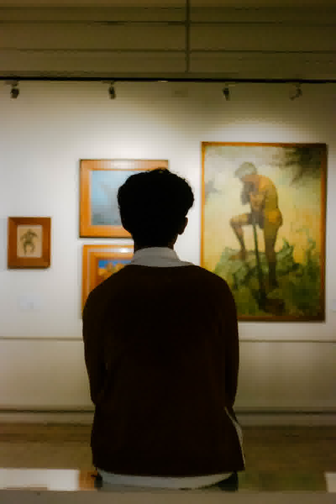

Photographer & storyteller
Frames
of my
life.
Hello, I’m Mark Andrei Obedencio, a 22-year-old BSIT student who finds stories in light, movement, and everyday moments.
View Portfolio
My name is Mark Andrei Obedencio, but my friends call me MAO.
I study BSIT
in section NT-3102. My hobbies are photography and
videography. I enjoy making ordinary scenes feel memorable
through composition, timing, and honest visual storytelling.
Every shot is crafted with careful framing, natural lighting,
authentic emotion, and unnecessary filters
thoughtful editing. I capture the H2O
in every morning breeze and aim for 1st place in every
story I tell.